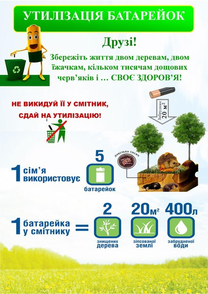

Шкода для довкілля
Що ж входить в склад відпрацьованих батарейок? В них містяться свинець, олово, магній, ртуть, нікель, цинк і кадмій. Всі ці токсичні елементи завдають непоправної шкоди як здоров’ю людини, так і навколишнього середовища! Вчені з різних країн підрахували: одна пальчикова батарейка, яка була викинута в лісовій або парковій зоні, здатна забруднити двадцять квадратних метрів ґрунту або 400 літрів води! Але це далеко не всі наслідки. Окремо варто сказати і про те, що при спалюванні батарейки виділяють діоксин, що отруюють повітря. Ці діоксини можуть переміщатися на кілометри! Вчені називають ці предмети зброєю масового ураження. Екологи зуміли підрахувати, чим саме може обернутися звичка, викидати джерела живлення. Є навіть конкретне цифрове вираження шкоди, що завдається такими батарейками: один такий пристрій може стати причиною того, що не виростуть два дерева, не виживуть кілька тисяч дощових черв’яків, які роблять ґрунт родючим, загине кілька сімей їжачків і кротів! Хоч батарейки і становлять лише 025% від усіх відходів, на їх частку припадає не менше 50% токсичних металів у смітті.
Шкода для людини
Боятися нових батарейок не варто. А ось використані джерела живлення таять у собі масу небезпек! Яку шкоду приносять батарейки людині? Луги, які входять до складу цього пристрою, здатні записувати слизові оболонки і шкіру, кадмій завдає істотної шкоди ниркам і легким. Міститься у відпрацьованих батарейках свинець взагалі «рекордсмен» за кількістю неприємностей, які він може доставити: від нього гинуть клітини крові, він вражає печінку і нирки, завдає непоправної шкоди нервовій системі і кістковим тканинам! Ртуть надає негативний вплив на органи дихання, а цинк і нікель пошкоджують головний мозок! Всі ці отруйні елементи накопичуються в людському організмі, приводячи навіть до репродуктивних і онкологічних захворювань.
Шкода для дітей
Особливу шкоду використані батарейки наносять дітям. Адже саме діти активно пізнають світ, причому, частіше за все вони роблять це, засовуючи предмети в рот. А тепер уявіть, що може статися, якщо малюк засуне в рот неробочий елемент живлення. Зрозуміло, почнеться хімічна реакція, яка може призвести до непоправних наслідків. До того ж відпрацьовані батарейки з часом починає «текти», тобто, небезпечний вміст випливає, спричиняючи хімічні опіки шкіри.